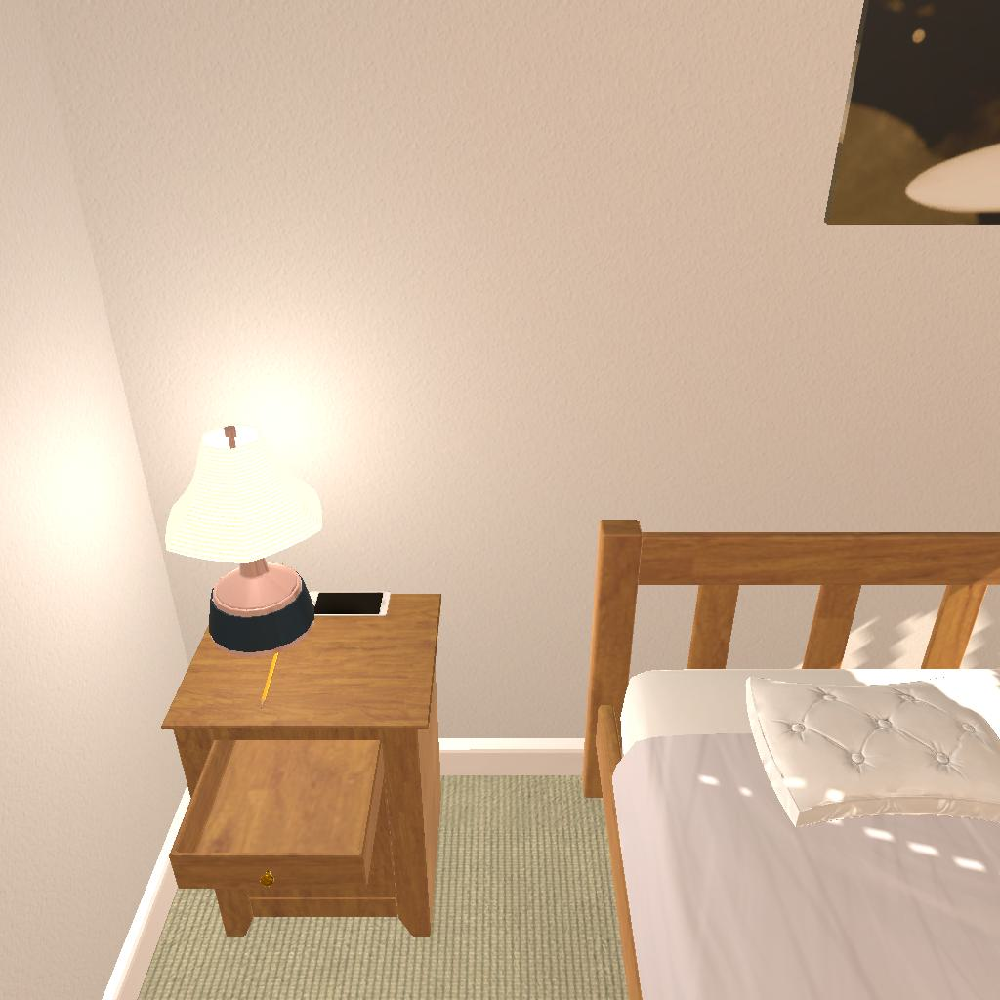

---------------------------------------------------------task: 0---------------------------------------------------------
--------------------------------------------------------------------------------------------------------------------------------------------------------------------
--------------------------------------------------------------------------------------------------------------------------------------------------------------------
Step:--------------------------------------------------------------------------10-------------------------------------------------------------------------------
----------------------------------------
VLM Prompt:
Image1:
**Instruction**
1. Analyze the provided image to identify all visible household objects, focusing on those relevant to the task description "examine the alarmclock with the desklamp."
2. Use the analysis of the image and the task hint "The agent must find an object of the desired type, locate and turn on a light source with the desired object in-hand." to answer the question: what is the most reasonable action in the choices for the task description "examine the alarmclock with the desklamp"?
4. Decide and write the answer using the template: The answer is: (i): , where i is the real number. If there is no desired object in the image, search every place based on **Initial Observation** to find the object. And if no one is exactly correct, choose a similar answer.
**Initial Observation**
You are in the middle of a room. Looking quickly around you, you can see bed (1), sidetable (1), drawer (1-11), dresser (1), safe (1), laundryhamper (1), garbagecan (1)
**Answer Choices**
(1): go to bed 1
(2): go to drawer 1
(3): go to dresser 1
(4): go to drawer 2
(5): go to drawer 3
(6): go to drawer 4
(7): go to drawer 5
(8): go to drawer 6
(9): go to drawer 7
(10): go to drawer 8
(11): go to drawer 9
(12): go to drawer 10
(13): go to drawer 11
(14): go to safe 1
(15): go to laundryhamper 1
(16): go to garbagecan 1
(17): take pillow 1 from sidetable 1
(18): take cellphone 1 from sidetable 1
(19): take pencil 1 from sidetable 1
(20): use desklamp 1
**Answer**
Let's think step by step by following the instructions.
----------------------------------------
----------------------------------------
Original Response:
The task description is "examine the alarmclock with the desklamp." From the image provided, we can see a desklamp on the sidetable next to the bed. However, there is no visible alarm clock in the image. Since the instruction suggests that the agent must find the object of the desired type (alarm clock) and then locate and turn on a light source (desklamp) with the desired object in hand, the most reasonable action would be to first find the alarm clock.
Based on the initial observation, the alarm clock could potentially be in the drawer or on the dresser, as those are common places to keep an alarm clock. Since the image only shows a sidetable and no drawers or dresser, we will have to search the places mentioned in the initial observation.
Among the answer choices, none directly mention taking or examining an alarm clock. However, since the dresser is a common place for an alarm clock, the next reasonable action would be to go to the dresser to search for the alarm clock.
The answer is: (3): go to dresser 1
----------------------------------------
----------------------------------------
>>> Refine Original VLM Response and Get Pure Action: go to dresser 1
----------------------------------------
-----------------------------------------------------------------
Running time: 12.321412801742554 seconds
Total Money: 0.19488
-----------------------------------------------------------------
-----------------------------------------------------------------
Text Observation:You arrive at loc 3. On the dresser 1, you see a bowl 1, a alarmclock 1, a keychain 1, a pen 1, and a pencil 2.
-----------------------------------------------------------------
UNSUCCEED